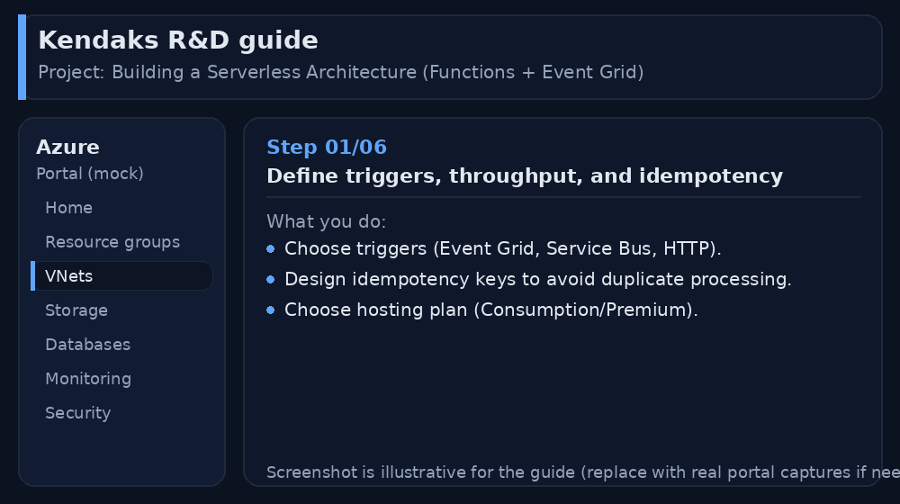
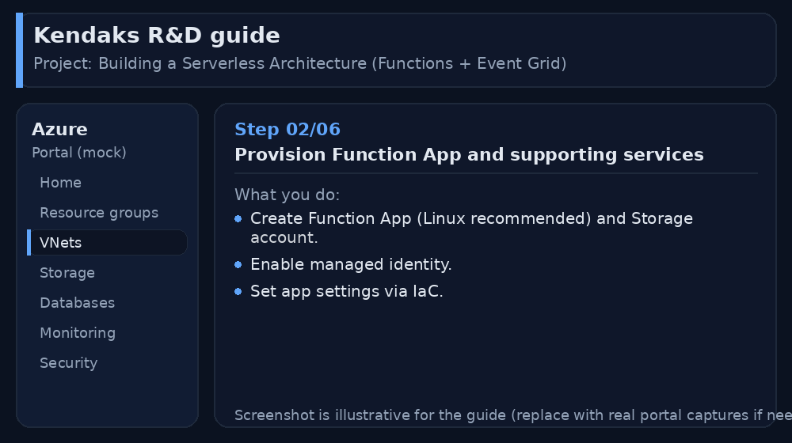
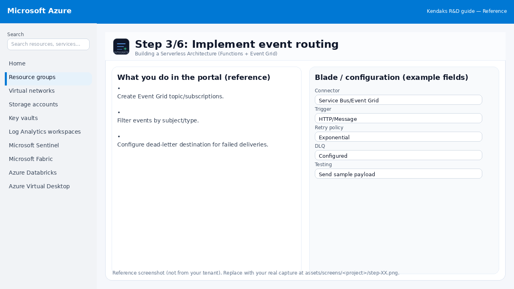
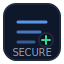
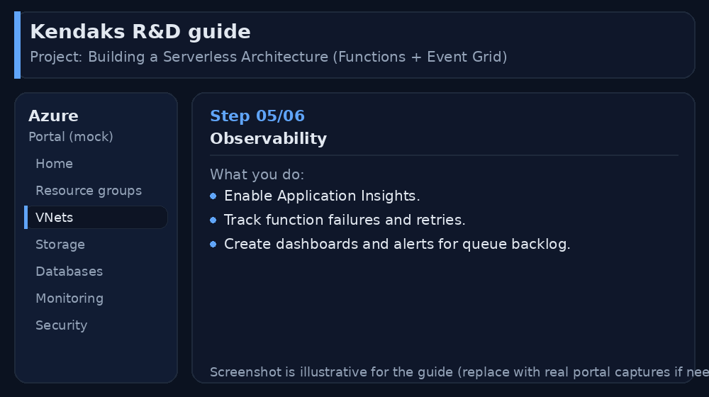
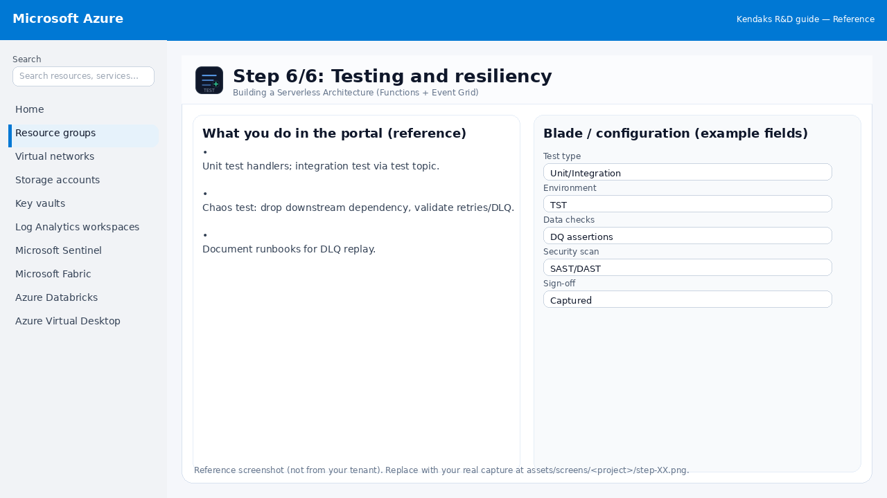

Building a Serverless Architecture (Functions + Event Grid)
Category: Cloud Architecture
Scenario: A platform needs event-driven processing with minimal ops overhead. Example: 'Kendaks Notifications' processes events and sends emails/SMS with durable retries.
Architecture diagram
High-level view of the main components and data/control flows.
Low-level architecture diagram (Visio-style)
Implementation view (networking, security, ops). Click to open full size.
Low-level architecture details
(No low-level text provided.)
Step-by-step implementation
Step 1/6

Define triggers, throughput, and idempotency

Reference portal screenshot (click to zoom). Replace with your tenant capture if needed.
- Choose triggers (Event Grid, Service Bus, HTTP).
- Design idempotency keys to avoid duplicate processing.
- Choose hosting plan (Consumption/Premium).
Validation checklist
- Stakeholders have signed off the scope, SLAs, and data/security requirements.
- You have documented naming standards, environments, and ownership (RACI).
Step 2/6

Provision Function App and supporting services

Reference portal screenshot (click to zoom). Replace with your tenant capture if needed.
- Create Function App (Linux recommended) and Storage account.
- Enable managed identity.
- Set app settings via IaC.
Validation checklist
- Deployment completed; smoke tests passed; rollback plan confirmed.
Step 3/6

Implement event routing

Reference portal screenshot (click to zoom). Replace with your tenant capture if needed.
- Create Event Grid topic/subscriptions.
- Filter events by subject/type.
- Configure dead-letter destination for failed deliveries.
Validation checklist
- Connections/authentication succeed and test messages/records flow through.
- Retries/DLQ/error handling are configured and validated with a forced failure.
Step 4/6

Secure endpoints and secrets
 Reference portal screenshot (click to zoom). Replace with your tenant capture if needed.
Reference portal screenshot (click to zoom). Replace with your tenant capture if needed.
- Use private endpoints and VNet integration where needed.
- Store secrets in Key Vault and use references.
- Use JWT validation for HTTP triggers.
Validation checklist
- Security baseline applied (Defender/Policy/WAF/Firewall rules as applicable).
- No public endpoints unless explicitly approved; private endpoints verified where applicable.
- Alerts are configured for high-risk events.
Step 5/6

Observability

Reference portal screenshot (click to zoom). Replace with your tenant capture if needed.
- Enable Application Insights.
- Track function failures and retries.
- Create dashboards and alerts for queue backlog.
Validation checklist
- Logs and metrics are flowing (check Log Analytics / Monitor).
- Alerts trigger correctly (test alert path to email/Teams/ITSM).
Step 6/6

Testing and resiliency

Reference portal screenshot (click to zoom). Replace with your tenant capture if needed.
- Unit test handlers; integration test via test topic.
- Chaos test: drop downstream dependency, validate retries/DLQ.
- Document runbooks for DLQ replay.
Validation checklist
- UAT completed with representative users and scenarios.
- Performance meets baseline; issues tracked and remediated.